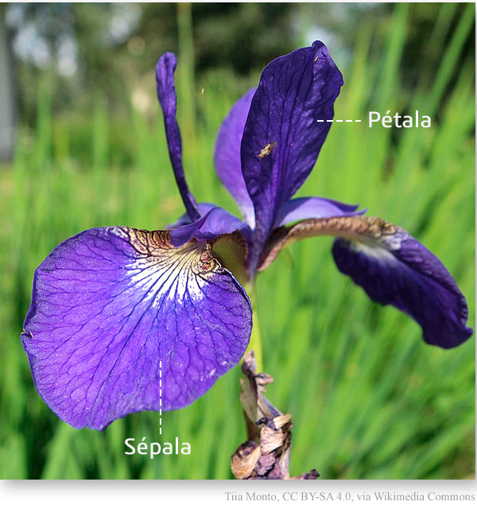
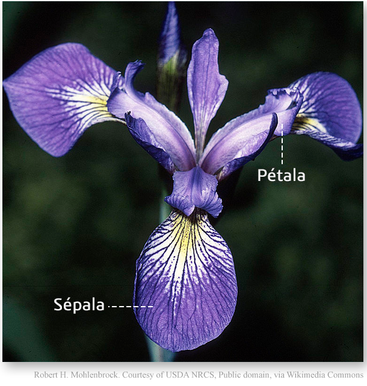
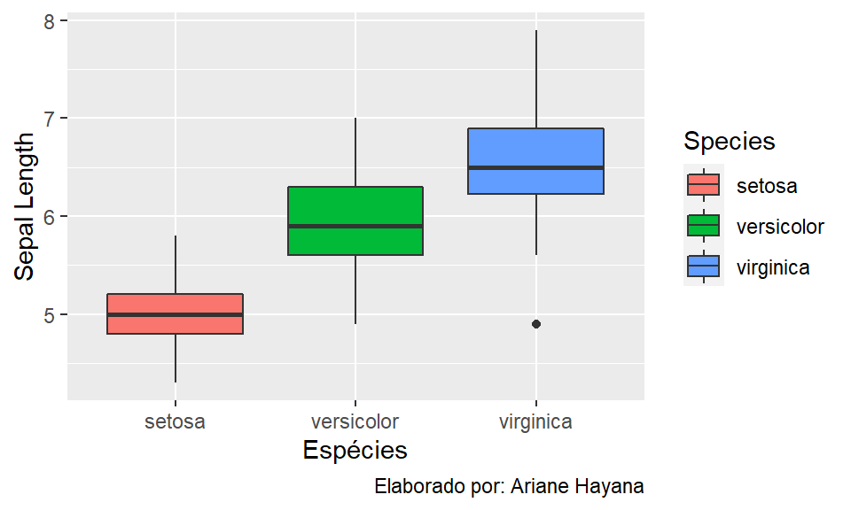

library(DT)
iris |>
datatable()Conjunto de dados: Iris
O conjunto de dados consiste em 50 amostras de cada uma das três espécies de Iris ( Iris setosa, Iris virginica e Iris versicolor). Quatro variáveis foram medidas em cada amostra: o comprimento e a largura das sépalas e pétalas, em centímetros.
Fonte: Wikipédia
Os dados podem ser consultados na guia Tabela, bem como as imagens das flores:



Inserindo código do R em linha de texto
Você pode automatizar a apresentação de seus resultados no texto:
O dataset iris tem 5 colunas e 150 linhas. As variáveis do dataset são Sepal.Length, Sepal.Width, Petal.Length, Petal.Width, Species.
Visualizações
Podemos gerar uma matriz de gráficos de dispersão interativa usando a biblioteca JavaScript D3 do pacote pairsD3 (Tarr e Bostock 2022).
Tarr, Garth, e Mike Bostock. 2022. "pairsD3: D3 Scatterplot Matrices". https://CRAN.R-project.org/package=pairsD3.
Código
library(pairsD3)
pairsD3(iris[,1:4], group=iris[,5])Matriz interativa - Iris
library(ggplot2)
plot <- ggplot(iris,
aes(x = Species,
y = Sepal.Length)) +
geom_boxplot(aes(fill = Species)) +
labs(caption = "Elaborado por: Ariane Hayana") +
xlab("Espécies") +
ylab("Sepal Length") +
theme_grey();plot
plotly::ggplotly(plot)Boxplot dinâmico.
Universidade Federal do Paraná (UFPR)
A Universidade Federal do Paraná (UFPR) é a mais antiga instituição de ensino com concepção de universidade do Brasil, fundada em 19 de dezembro de 1912, inicialmente com o nome de Universidade do Paraná.
Atualmente as instalações da universidade estão distribuídas entre os diversos campi de Curitiba e de outras cidades do Paraná. A instituição oferta cursos de graduação, sendo cursos de licenciatura, bacharelado, tecnólogo, de mestrado, de doutorado, de especialização lato sensu, além de residências médicas, cursos técnicos e à distância. 1
1 Texto retirado do Wikipédia. Acesso em 12 out. 2022.
Vídeos no relatório Quarto
Necessário instalar Quarto v1.2
O suporte para vídeos é um recurso do Quarto v1.2. Se você quiser usar esse recurso, faça o download e instale o Quarto v1.2 antes de continuar.
Instale a versão de pré-lançamento do Quarto aqui.
Para inserir vídeos, após feita as instalações necessárias, basta inserir o link do Youtube na sintaxe a seguir:
{{< video https://www.youtube.com/watch?v=Jg7BGfeJbIQ&t=603s >}}Vídeo retirado do Youtube do PET-Estatística
O resultado será:
Para alterar o tamanho do vídeo, basta inserir width="xx" (largura) height="xx" (altura), como no exemplo:
{{< video https://www.youtube.com/watch?v=Jg7BGfeJbIQ&t=603s width="400" height="300" >}}Para mais detalhes sobre a utilização de vídeos, clique aqui.